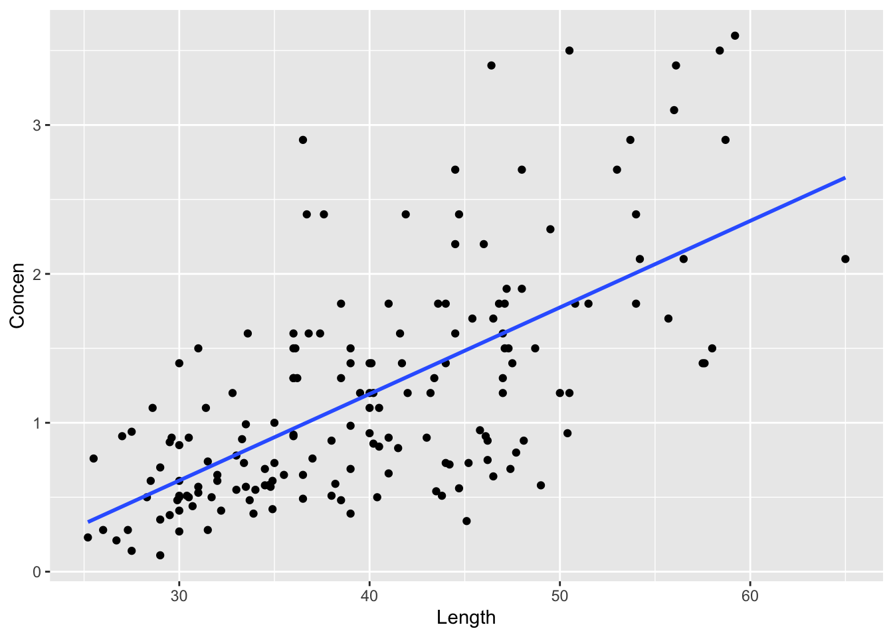
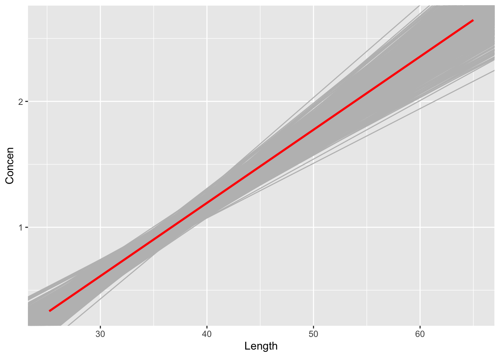

You can download a template file to work with here.
File organization: Save this file in the “Activities” subfolder of your “STAT155” folder.
Learning goals
Let \(\beta\) be some population parameter and \(\hat{\beta}\) be a sample estimate of \(\beta\). In order to study the potential error in \(\hat{\beta}\), you will…
explore two approaches to approximating the sampling distribution of \(\hat{\beta}\):
Central Limit Theorem (CLT)
bootstrapping
identify the difference between sampling and resampling
intuit how bootstrapping results can be used to make inferences about \(\beta\)
Readings and videos
You can watch the following video after class to reinforce ideas:
Context: Rivers contain small concentrations of mercury which can accumulate in fish. Scientists studied this phenomenon among largemouth bass in the Wacamaw and Lumber rivers of North Carolina. One goal was to explore the relationship of a fish’s mercury concentration (Concen) with its size, specifically its Length:
Rows: 171 Columns: 5
── Column specification ────────────────────────────────────────────────────────
Delimiter: ","
chr (1): River
dbl (4): Station, Length, Weight, Concen
ℹ Use `spec()` to retrieve the full column specification for this data.
ℹ Specify the column types or set `show_col_types = FALSE` to quiet this message.
Plot and model the relationship of mercury concentration with length:
fish %>%ggplot(aes(y = Concen, x = Length)) +geom_point() +geom_smooth(method ="lm", se =FALSE)
`geom_smooth()` using formula = 'y ~ x'

fish_model <-lm(Concen ~ Length, data = fish)coef(summary(fish_model))
Estimate Std. Error t value Pr(>|t|)
(Intercept) -1.13164542 0.213614796 -5.297598 3.617750e-07
Length 0.05812749 0.005227593 11.119359 6.641225e-22
Exercise 1: sample vs population
In the summary table, is the Length coefficient 0.058 the population slope\(\beta_1\) or a sample estimate\(\hat{\beta}_1\)?
If it’s a sample estimate, how accurate do you think it is?
Exercise 2: The rub
Since we don’t know \(\beta_1\), we can’t know the exact error in \(\hat{\beta}_1\)!
This is where sampling distributions come in. They describe how estimates \(\hat{\beta}_1\) might vary from sample to sample, thus how far these estimates might fall from \(\beta_1\):
In past activities, we used simulations to approximate the sampling distribution.
For example, we took and evaluated 500 different samples of 10 counties from the population of 3142 counties.
Why can’t we do that here in our fish example?
Exercise 3: CLT
In practice, we can’t observe the sampling distribution and its corresponding standard error. But we can approximate them.
When our sample size n is “large enough”, we might approximate the sampling distribution using the CLT:
The standard error in the CLT is approximated from our sample via some formula \(c / \sqrt{n}\) where “c” is complicated.
Obtain and interpret this standard error from the model summary table:
coef(summary(fish_model))
REFLECT
Great! We can approximate the sampling distribution and standard error using the CLT.
BUT:
the quality of this approximation hinges upon the validity of the Central Limit theorem which hinges upon the validity of the theoretical model assumptions
the CLT uses complicated formulas for the standard error estimates, thus can feel a little mysterious
Let’s explore how we can use bootstrapping to complement (not entirely replace) the CLT.
The saying “to pull oneself up by the bootstraps” is often attributed to Rudolf Erich Raspe’s 1781 The Surprising Adventures of Baron Munchausen in which the character pulls himself out of a swamp by his hair (not bootstraps). In short, it means to get something from nothing, through your own effort:
In this spirit, statistical bootstrapping doesn’t make any probability model assumptions. It uses only the information from our one sample to approximate standard errors.
Exercise 4: Challenge
Recall that we have a sample size of 171 fish:
nrow(fish)
We’ll obtain a bootstrapping distribution of \(\hat{\beta}_1\) by taking many (500) different samples of 171 fish and exploring the degree to which \(\hat{\beta}_1\) varies from sample to sample. Let’s try doing this as we did in past activities:
# Build 500 models using samples of size 171fish_models_bad_simulation <- mosaic::do(500)*( fish %>%sample_n(size =171, replace =FALSE) %>%with(lm(Concen ~ Length)))head(fish_models_bad_simulation)
What’s funny about the results?
Why do you think this happened?
How might you adjust the code to “fix” things?
Exercise 5: Resampling
In practice, we take one sample of size n from the population. To obtain a bootstrapping distribution of some sample estimate \(\hat{\beta}\), we…
take many resamples of size n with replacement from the sample
calculate \(\hat{\beta}\) using each resample
Let’s wrap our minds around the idea of resampling using a small example of 5 fish:
The chunk below samples 5 fish without replacement from our small_sample of 5 fish, and calculates their mean length. Run it several times. How do the sample and resulting mean change?
Sampling our sample without replacement merely returns our original sample. Instead, resample 5 fish from our small_samplewith replacement. Run it several times. What do you notice about the samples? About their mean lengths?
Resampling our sample provides insight into the variability, hence potential error, in our sample estimates. (This works better when we have a sample bigger than 5!) As you observed in part b, each resample might include some fish from the original sample several times and others not at all. Why is this ok?
Exercise 6: Bootstrapping
We’re ready to bootstrap!
Fix one line of the code below to obtain 500 bootstrap estimates of the model of Concen by Length:
# Set the seed so we get the same resultsset.seed(155)# Build 500 bootstrap models using REsamples of size 171fish_models_bootstrap <- mosaic::do(500)*( fish %>%sample_n(size =171, replace =FALSE) %>%with(lm(Concen ~ Length)))head(fish_models_bootstrap)
Exercise 7: Bootstrap results
Recall that we started with 1 sample, thus 1 estimate of the model:
coef(summary(fish_model))
We now have 500 (resample) bootstrap estimates of the model. These vary around the red line in the plot below. What does the red line represent: the actual population model or fish_model (the estimated model calculated from our original fish sample)?
fish %>%ggplot(aes(y = Concen, x = Length)) +geom_abline(data = fish_models_bootstrap, aes(intercept = Intercept, slope = Length), color ="gray") +geom_smooth(method ="lm", color ="red", se =FALSE)
Now focus on just the 500 (resample) bootstrap estimates of the slope Length coefficient. Before plotting the distribution of these resampled slopes, what do you anticipate? What shape do you expect the distribution will have? Around what value do you expect it to be centered?
Check your intuition with the plot below. Was your intuition right?
Since they’re calculated from resamples of our sample, not different samples from the population, the 500 bootstrap estimates of the slope are centered around our original sample estimate. Importantly:
The degree to which the bootstrap estimates vary from the original sample estimate provides insight in the degree to which our original sample estimate might vary from the actual population slope (i.e. its standard error)!
Use the bootstrap estimates of the Length slope coefficient to approximate the standard error of 0.05813, our original sample estimate. (HINT: a standard error is a standard deviation)
fish_models_bootstrap %>%___(___(Length))
How does this bootstrapped approximation of standard error compare to that calculated via (a complicated mystery) formula and reported in the model summary table?
coef(summary(fish_model))
Pause: Powerful stuff!
Just pause here to appreciate how awesome it is that you approximated the potential error in our sample estimates using simulation and your sample data alone – no “theorems” or complicated formulas.
You might say we pulled ourselves up by the bootstraps.
Exercise 9: Looking ahead at intervals
In the past few activities, we’ve been exploring sampling variability and error. These tools are critical in using our sample to make inferences about the broader population. We’ll explore inference more formally in the weeks ahead.
Here, use your intuition to apply our bootstrapping results:
fish %>%ggplot(aes(y = Concen, x = Length)) +geom_abline(data = fish_models_bootstrap, aes(intercept = Intercept, slope = Length), color ="gray") +geom_smooth(method ="lm", color ="red", se =FALSE)
Our original sample estimate of the Length coefficient, 0.0581, was simply our best guess of the actual coefficient among all fish. But we know it’s wrong. Based on the plots above, provide a bigger range or interval of plausible values for the actual coefficient among all fish.
We can do better than visual approximations. Use the fish_models_bootstrap results to provide a more specific interval of plausible values for the actual Length coefficient. Do you think we should use the full range of observed bootstrap estimates? Just a fraction? (Hint: the quantile() function will be useful. For example, quantile(x, 0.25) gives the 25th percentile of x, and quantile(x, 0.5) gives the 50th percentile.)
Some researchers claim that mercury content is associated with the length of a fish. Let’s use our bootstrapping results to test this hypothesis.
Based on only the plot below of our bootstrap models, do you think our sample data supports this hypothesis?
fish %>%ggplot(aes(y = Concen, x = Length)) +geom_abline(data = fish_models_bootstrap, aes(intercept = Intercept, slope = Length), color ="gray") +geom_smooth(method ="lm", color ="red", se =FALSE)
What about numerical evidence? Based on the interval you calculated in part b of the previous exercise, do you think our sample data supports this hypothesis?
Solutions
Exercise 1: sample vs population
sample estimate
no idea (at this point at least)! we don’t know the actual population slope
Exercise 2: The rub
We only have access to a sample of fish, not the entire population.
Exercise 3: CLT
coef(summary(fish_model))
Estimate Std. Error t value Pr(>|t|)
(Intercept) -1.13164542 0.213614796 -5.297598 3.617750e-07
Length 0.05812749 0.005227593 11.119359 6.641225e-22
0.005 is the standard error for the Length coefficient and tells us how much a slope estimate will typically deviate from the true population value. Another way to put it: it tells us the amount of uncertainty in our slope estimate of 0.058. It tells us how much that slope estimate might jump around from sample to sample.
Exercise 4: Challenge
# Build 500 models using samples of size 171fish_models_bad_simulation <- mosaic::do(500)*( fish %>%sample_n(size =171, replace =FALSE) %>%with(lm(Concen ~ Length)))
Registered S3 method overwritten by 'mosaic':
method from
fortify.SpatialPolygonsDataFrame ggplot2
Sampling the same fish more than once is like observing different fish with similar characteristics.
Exercise 6: Bootstrapping
# Set the seed so we get the same resultsset.seed(155)# Build 500 bootstrap models using REsamples of size 171fish_models_bootstrap <- mosaic::do(500)*( fish %>%sample_n(size =171, replace =TRUE) %>%with(lm(Concen ~ Length)))head(fish_models_bootstrap)
fish %>%ggplot(aes(y = Concen, x = Length)) +geom_abline(data = fish_models_bootstrap, aes(intercept = Intercept, slope = Length), color ="gray") +geom_smooth(method ="lm", color ="red", se =FALSE)
`geom_smooth()` using formula = 'y ~ x'

intuition
They are normally distributed around our original sample estimate.
Estimate Std. Error t value Pr(>|t|)
(Intercept) -1.13164542 0.213614796 -5.297598 3.617750e-07
Length 0.05812749 0.005227593 11.119359 6.641225e-22
Exercise 9: Looking ahead at intervals
fish %>%ggplot(aes(y = Concen, x = Length)) +geom_abline(data = fish_models_bootstrap, aes(intercept = Intercept, slope = Length), color ="gray") +geom_smooth(method ="lm", color ="red", se =FALSE)
Yes. All of the lines reflect a positive association.
fish %>%ggplot(aes(y = Concen, x = Length)) +geom_abline(data = fish_models_bootstrap, aes(intercept = Intercept, slope = Length), color ="gray") +geom_smooth(method ="lm", color ="red", se =FALSE)
`geom_smooth()` using formula = 'y ~ x'
Yes. It falls entirely above 0 (a slope of 0 indicating no association).